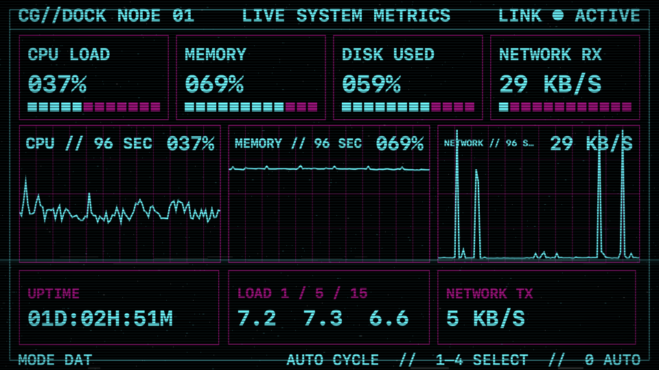
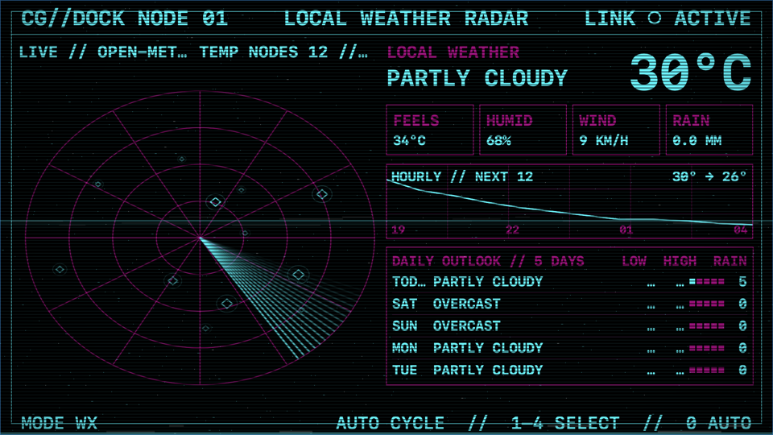
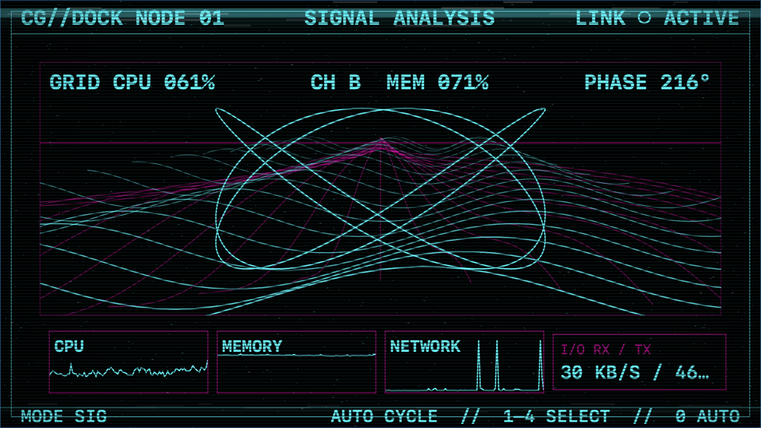

Your tiny screen,
alive.
A native retro telemetry and vector console for a dedicated Mac display.
macOS 14+ · Apple silicon & Intel · Free & open source
The first public download is in preparation. Source builds are available on GitHub.



Real readings
CPU, memory, disk, network, GPU counters, uptime and optional battery flow—shown locally without analytics.
Built for a second screen
Retrolemetry remembers its display, returns after reconnection and stays hidden when that chosen screen is away.
Make it yours
Move and resize modules, tune typography and CRT effects, reorder scenes, or switch between phosphor and synthwave.
Weather uses Open-Meteo with approximate or fixed public coordinates. Optional market quotes use your own Finnhub key stored in macOS Keychain. No accounts, ads, analytics or bundled credentials.